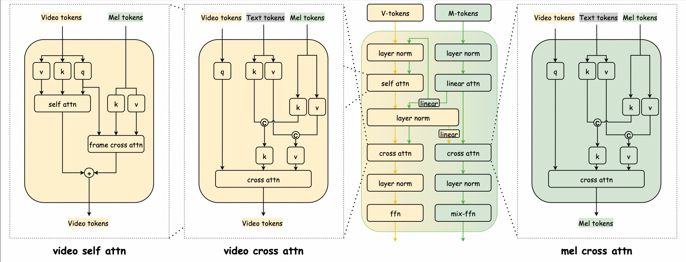
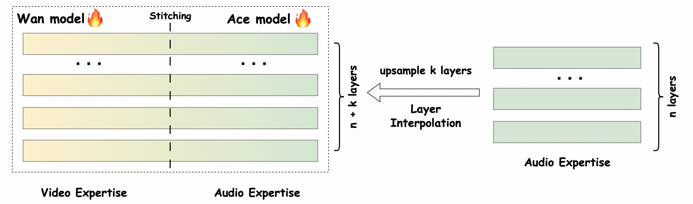

UniVerse-1: Unified Audio-Video Generation via Stitching of Experts


Architecture of UniVerse-1. (a) Overall architecture. The architectural foundation of UniVerse-1 is realized through a stitching of expertise methodology. This approach deeply integrates the pre-trained Wan2.1 video model and the Ace-step audio model. (b) Fused block. The fusion is implemented at a granular, block-by-block level, where each block in the Wan architecture is deeply fused with its corresponding block in the Ace-step architecture.
Abstract
We introduce UniVerse-1, a unified, Veo-3-like model capable of simultaneously generating coordinated audio and video. To enhance training efficiency, we bypass training from scratch and instead employ a stitching of expertise technique. This approach deeply fuses the corresponding blocks of pre-trained video and music generation expertise models, thereby fully leveraging their foundational capabilities. To ensure accurate annotations and temporal alignment for both ambient sounds and speech with video content, we developed an online annotation pipeline that processes the required training data and generates labels during training process. This strategy circumvents the performance degradation often caused by misalignment text-based annotations. Through the synergy of these techniques, our model, after being finetuned on approximately 7,600 hours of audio-video data, produces results with well-coordinated audio-visuals for ambient sounds generation and strong alignment for speech generation. To systematically evaluate our proposed method, we introduce Uni-Bench, a new benchmark dataset. In an effort to advance research in audio-video generation and to close the performance gap with state-of-the-art models such as Veo3, we make our model and code publicly available. We hope this contribution will benefit the broader research community.
Stitching of Expertise

We introduce a novel framework, termed 'Stitching of Expertise', for integrating specialized, pre-existing models for video and audio synthesis. This approach is designed to preserve the generative capabilities of each unimodal expert, while simultaneously enabling fine-grained, bidirectional interaction between them at the level of individual layer blocks.

To address the architectural disparity arising from the different depths of the two models, we employ a layer interpolation technique. This method aligns the models by systematically inserting new transformer blocks into the shallower network at uniform intervals. Critically, we initialize the parameters of each new block by linearly interpolating the weights of its immediately preceding and succeeding layers, which is essential for a smooth integration.
Generated results
Human Speech
Musical Instrument Playing
Other Sound
Uni-Bench
To systematically evaluate our proposed method, we introduce Uni-Bench, a new benchmark dataset. Uni-Bench comprises 600 image-text prompt pairs designed to cover a diverse range of sound categories. Highlighting its versatility, the benchmark supports the evaluation of not only joint audio-video generation but also unidirectional tasks. It can be used to assess video-to-audio generation, and it includes the specialized Uni-Ted subset for evaluating audio-to-video tasks like talking head synthesis.
Citation
@inproceedings{wang2025universe-1,
title={UniVerse-1:A Unified Audio-Video Generation Framework via Stitching of Expertise},
author={Wang, Duomin and Zuo, wei and Li, Aojie and Chen, Ling-Hao and Liao, Xinyao and Zhou, Deyu and Yin, Zixin and Dai, Xili and Yu, Gang},
journal={arxiv},
year={2025}
}